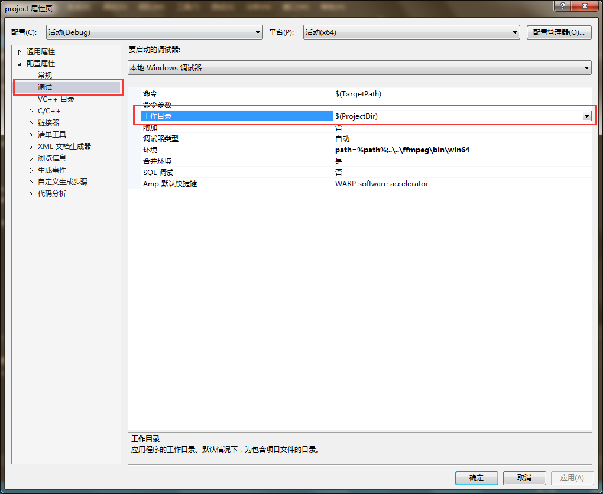
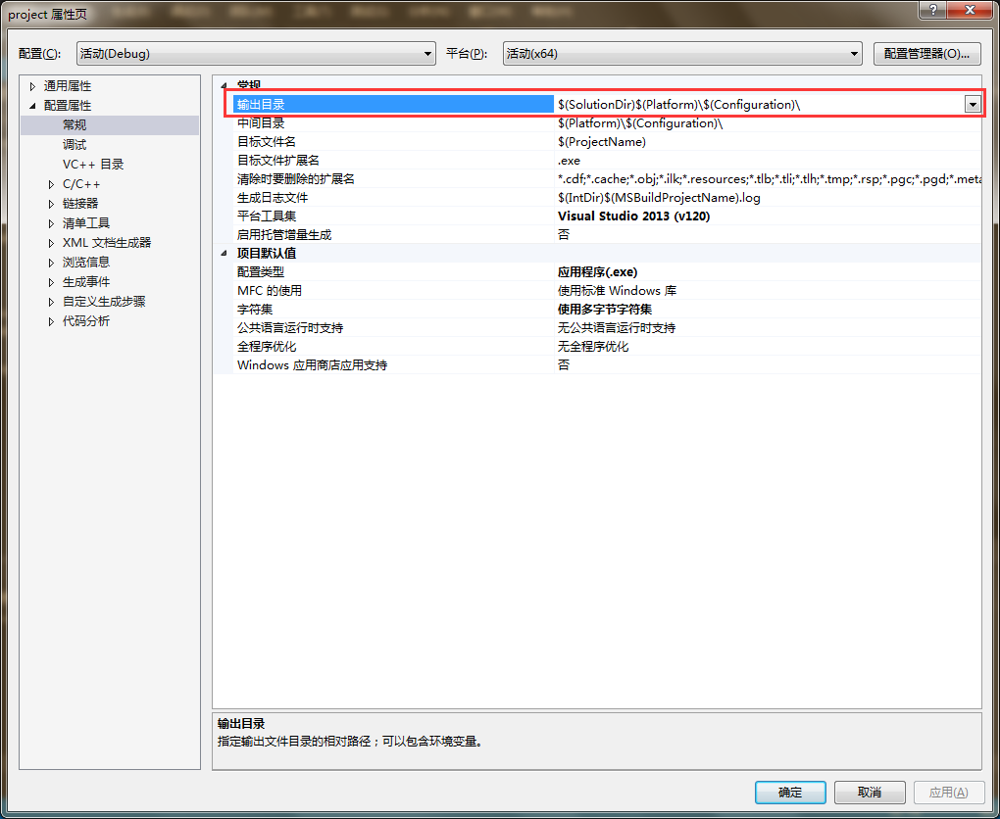
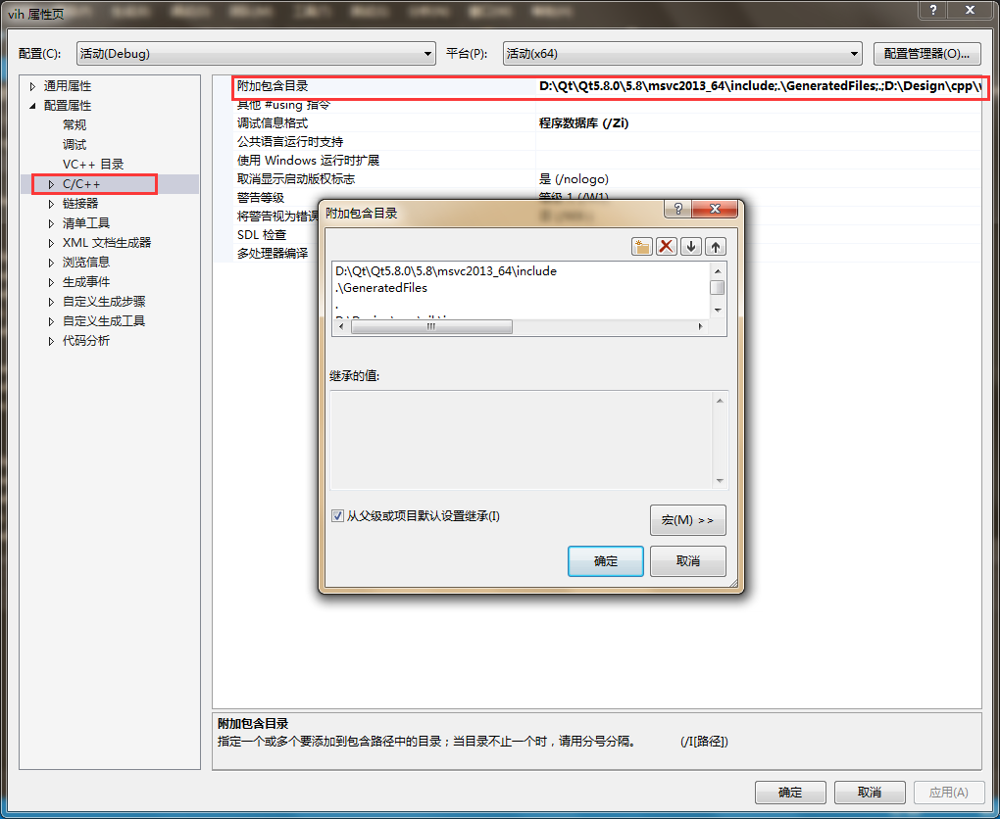
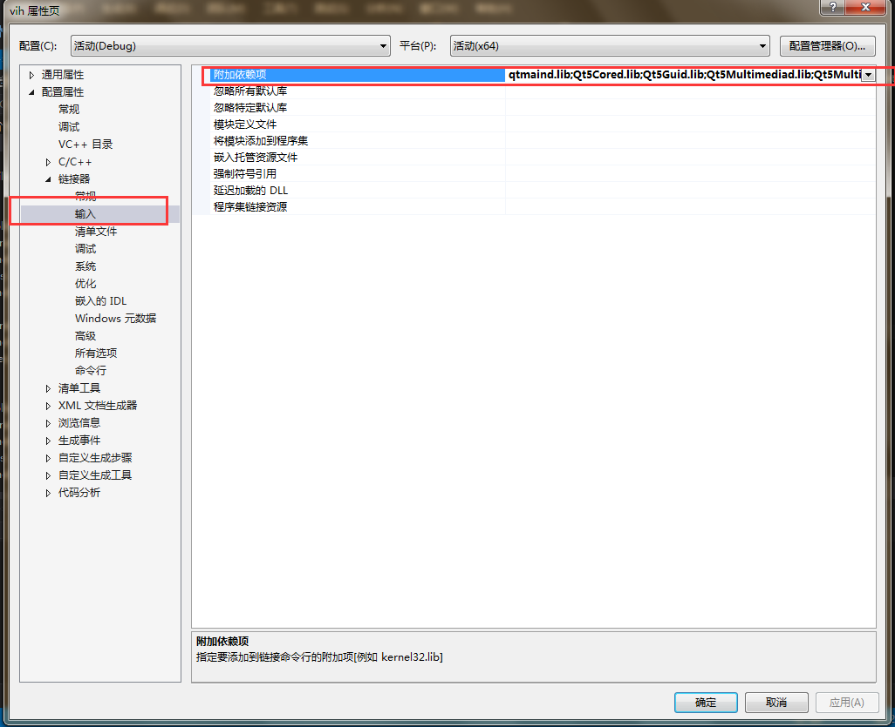
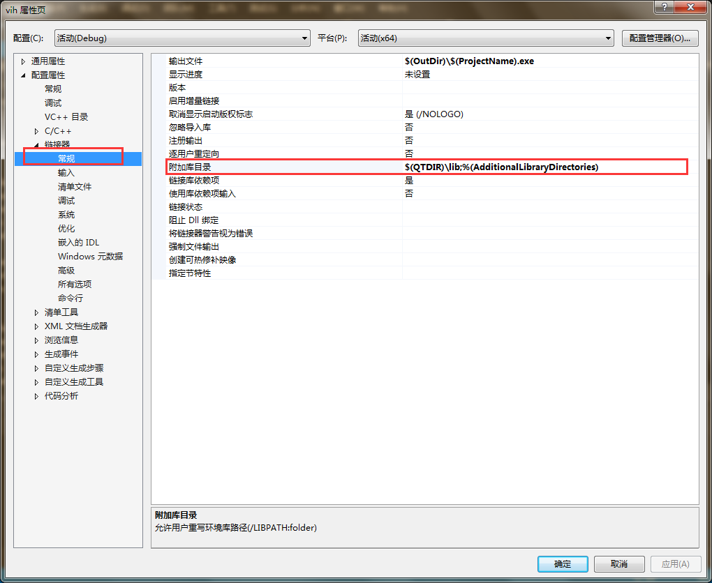
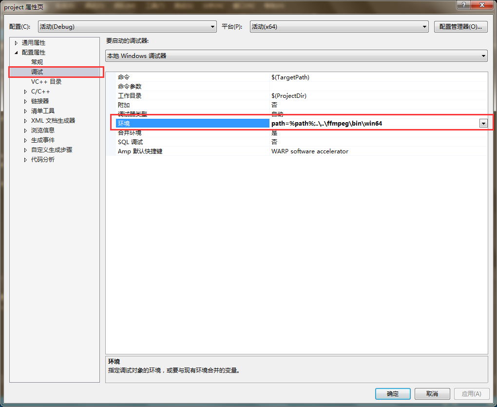

visual studio工程文件搜索路径配置
visual studio在生成可执行文件时涉及到搜索头文件、cpp文件、lib文件等操作。在进程运行中，涉及到搜索dll等操作。这些文件搜索操作都是在一定的指定路径下进行的，当在指定路径下无法搜素到文件时，均会导致错误，如编译错误、链接错误以及动态链接库的加载错误。
一、visual studio的常用路径
1.工作目录
工作目录是进程中最为重要的路径，所有的文件搜索都基本上会在优先工作路径上进行。在windows进程中，可以通过如下程序获得进程的工作目录：1
2
3
4
5
...
char workspace[1024];
GetCurrentDirectory(1024,workspace); //得到当前工作目录
...
工作目录也是io操作中相对路径的基本路径。可以直接在visual studio中配置进程的工作目录，在【工程属性】->【配置属性】->【调试】->【工作目录】中配置，如下图所示。

2.输出路径
输出路径就是可执行文件的输出目录。可以在visual studio的【工程属性】->【配置属性】->【常规】->【输出目录】中配置，如下图。

3.可执行文件路径
可执行文件也有路径，并且往往可执行查询的路径和当前工作路径不一样，有时为了方便，会将工作路径设置为可执行文件的路径。1
2
3
4
5
6
...
char moduleName[1024];
GetModuleFileName(NULL,moduleName, 1024); //得到当前模块路径
SetCurrentDirectory(moduleName); //设置当前工作路径为模块路径
...
二、Buidlding中的文件查找
Build过程是从源文件、头文件以及lib文件生成可执行的二进制文件的过程，如果其中有需要的文件无法找到，则Build失败。
1.c/cpp
c和cpp文件均称为源文件，这些文件文件的搜寻较为简单，因为在visual studio工程中添加源文件的时候，就已经默认将该文件的工作路径添加至工程属性中。在编译时，visual studio将会把所有的源文件路径交给编译器进行编译。若没有指明c/cpp文件，则该文件无法编译，那么其中涉及到的变量等均无法链接。
2.header
头文件通过#include <header>或者#include "header"的形式来引用需要的头文件。
#include "header"- 在当前c/cpp文件所在目录下搜寻header
- 在系统头文件目录中搜寻
#include <header>- 仅在系统文件目录中搜寻
可以在【工程属性】->【配置属性】->【c/c++】->【附加包含目录】中进行配置，如下图位置：

- 仅在系统文件目录中搜寻
3.lib
lib文件即静态库文件，是已经编译成二进制的文件，可以直接进行链接。在使用lib文件中所定义的数据时，需要可以找到该lib文件，进而进行链接。在使用lib文件时，需要指定需要哪些lib文件，通过在【工程属性】->【配置属性】->【链接器】->【输入】->【附加依赖项】中配置所需要依赖的lib文件，如下图所示：

已经指定了所需要的lib的文件名了，进一步需要这些lib文件搜寻路径，需要确定在搜寻路径中存在这些lib文件，搜寻的顺序为：
- 在工作目录中搜寻
- 在环境变量path
- 在visual studio附加库目录，附加库目录的位置在【工程属性】->【配置属性】->【链接器】->【常规】->【附加库目录】中，如下图所示。

三、Running中的文件查找
1.dll
dll是动态加载，当在路径中查找不到dll时，加载失败，程序崩溃。dll的搜寻路径为：
- 工作目录
- 环境变量path
工作目录通常不做更改，因此通常将dll放在环境变量path中。而visual studio可以配置进程运行时的环境变量，在【工程属性】->【配置属性】->【调试】->【环境】中可以进行相关配置，配置内容可以为path=%path%;<new-path>，可以保留原始的path不变，并引入新的path，如下图所示：

2.file
file的读写均是基于工作目录。